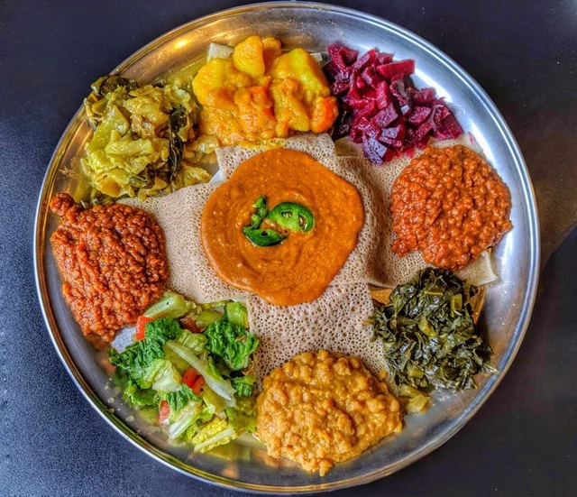
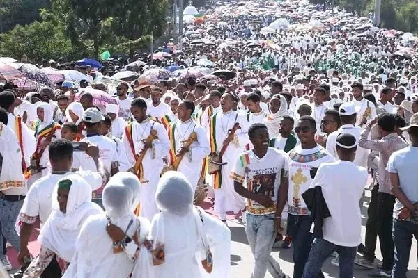

Coffee Ceremony
The Ethiopian coffee ceremony is an important part of social life. Green coffee beans are roasted, ground, and brewed in front of guests.

Injera and Wat
Injera is a spongy flatbread made from teff flour. It's served with wat (stew) and eaten with hands - no forks needed!

Timkat Festival
Timkat celebrates Epiphany with colorful processions, music, and dancing. People wear white clothes and priests carry replicas of the Ark of the Covenant.